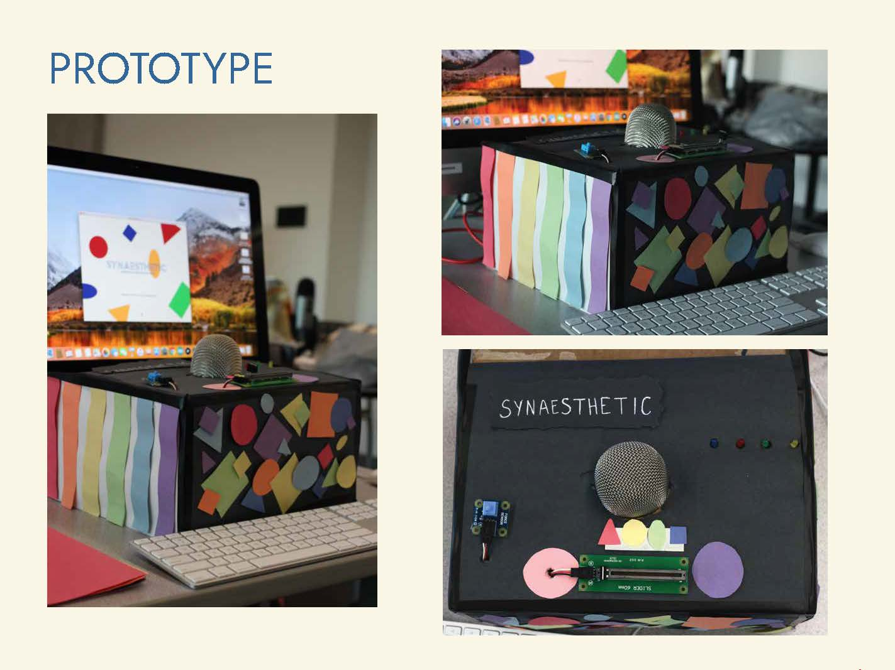
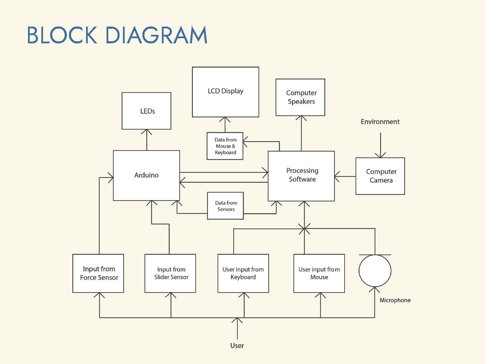
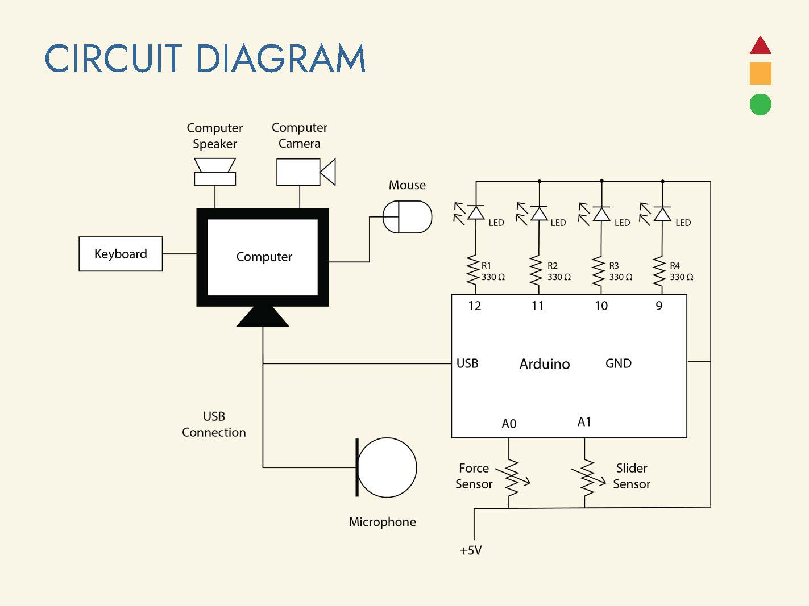
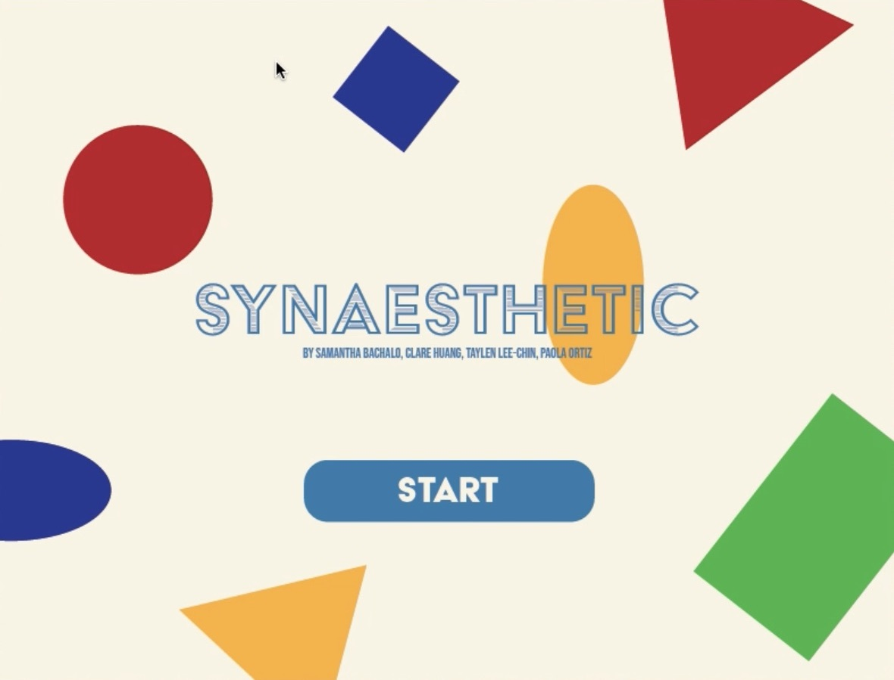
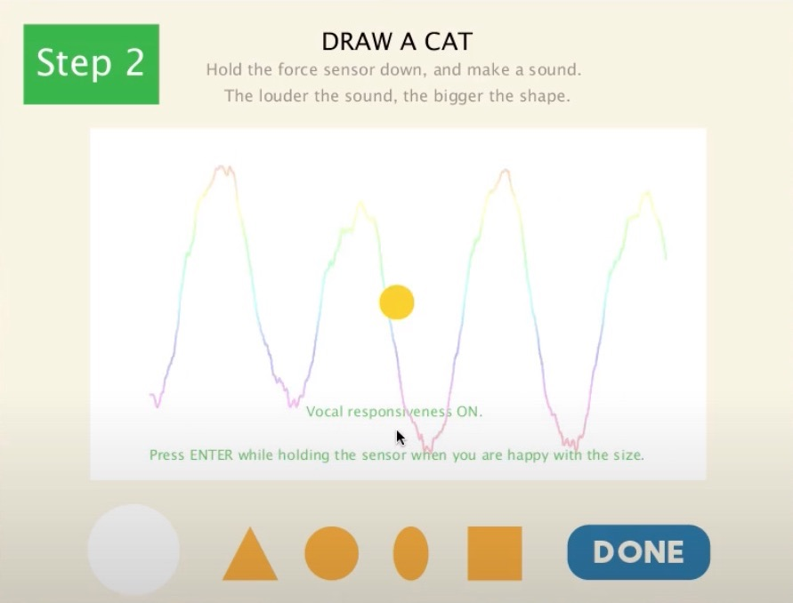
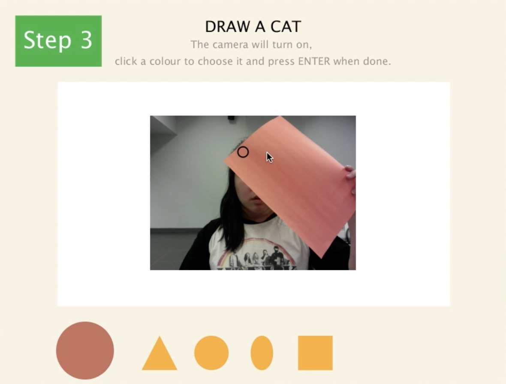
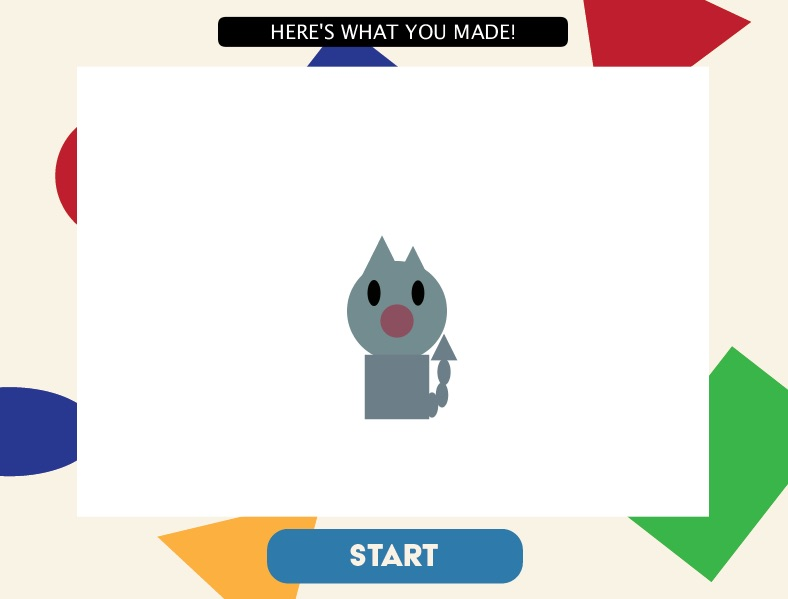

Date
Spring 2020
Role
Programmer
Circuit Design
Tools
Arduino
Processing (Java)
Circuit Building
Team
Samantha Bachalo
Paola Ortiz
Clare Huang
Synaesthetic is an educational toy and a computer technological program created for a student final project for a technological systems class. The user experience a simulated version of synesthesia, a neurological condition where the stimulation of one sense automatically triggers the stimulation of other senses, such as hearing colours and seeing sounds. Synesthesia educates users about how one may experience synesthesia by letting user experiment with colour, shape, size and sound to create a drawing using alternative senses to control how their art appears.
The task of the project was to develop a physically interactive system that takes the inputs of various sensors from user interaction, reads it into a computer system and creates various physical outputs such as light, motion and sound. Our project uses LEDs, a force sensor, a slider sensor, a microphone and computer inputs from a mouse, a keyboard, speakers and a camera. Altogether, these are incorporated into a functioning circuit.
1) The user begins the program by activating the force sensor. The background music begins and continues on a loop until the program terminates.
2) The user is welcomed to the start screen. Once the user releases the force sensor, they can click START with the mouse to proceed. The blue LED on box illuminates the first step of the program. The LEDs continue to light up one by one as the user proceeds.
3) The user is instructed to move the slider sensor to select which one out of four shapes they would like to draw. Once selected, the user presses Enter/Return to move to the next step.
4) The user is instructed to speak into microphone to grow size of their selected shape. The louder the sound, the bigger the shape. The user presses Enter/Return while speaking to select shape size and to continue.
5) The computer camera is activated and the user is instructed to place an object with colour of their choice in front of camera, or allow camera to detect a colour situated in their environment. The user clicks the mouse on the area of their desired colour of choosing. A dot on screen appears and displays the current colour selected, where the user presses Enter/Return to save colour selection and to go to next step.
6) The user is instructed to place their shape anywhere on the drawing canvas using computer mouse and pressing Enter/Return to place the shape.
7) The user proceeds through steps 3 - 6 until they are satisfied with their drawing. To display the final drawing, the user clicks the DONE button. To restart the program, the user can click START.



Above: Photos of the physical prototype toy built and diagrams that show how the physical components are connected together and how the various inputs and outputs interact with each other.




Above: Screenshots of the various stages and steps in the program.